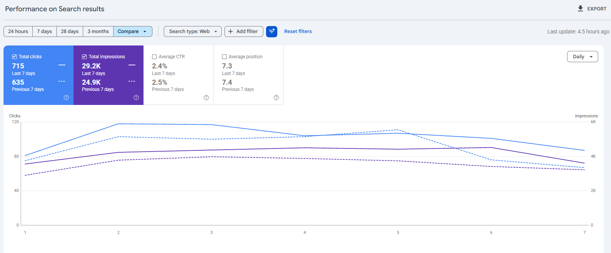
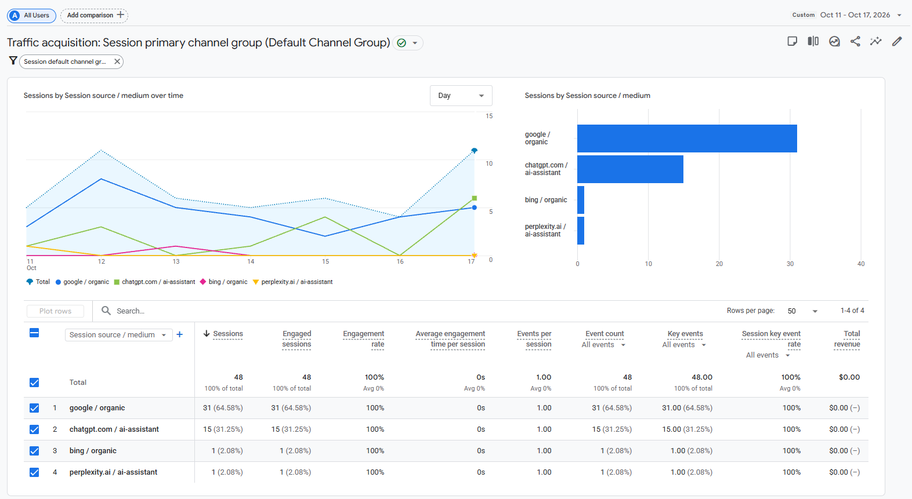
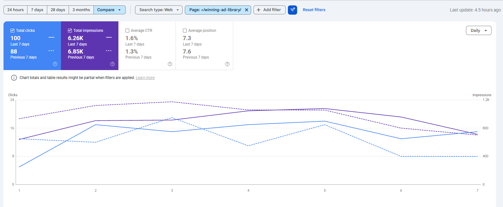
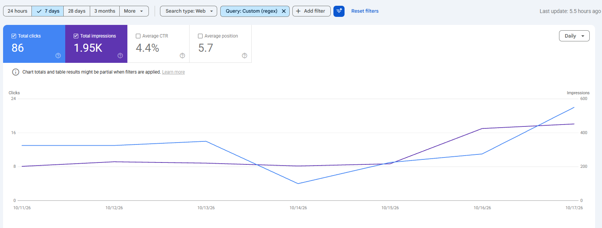
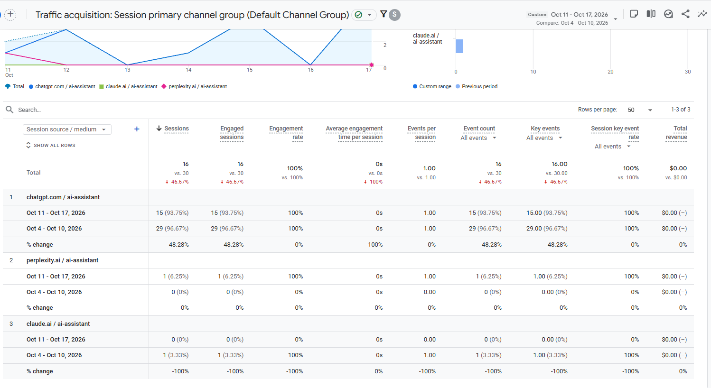
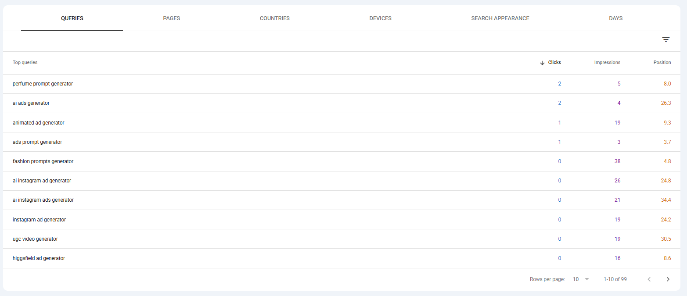

Promer
Báo cáo tuần · 11–17/10/2026
Người dùng đang tìm thấy Promer từ đâu, điều gì đang hiệu quả, và tuần tới làm gì.
Nguồn: Google Search Console · Google Analytics 4 · 11–17/10 so với 4–10/10
Hiện trạng · Google Search Console
Click
715
tuần trước 635 · +13%
Impressions
29.2K
tuần trước 24.9K · +17%
CTR · vị trí TB
2.4% · 7.3
tuần trước 2.5% · 7.4

Ý nghĩa: click và lượt hiển thị cùng tăng, vị trí trung bình tốt lên nhẹ (7.4 → 7.3). Đây là số do Google đo, không bị ảnh hưởng bởi traffic bất thường ở slide 7.
Promer · SEO Weekly 11–17/10/2026 · 2
Hiện trạng · GA4 · theo source / medium
| Kênh · source / medium | 11–17/10 | 4–10/10 | Δ |
|---|---|---|---|
| Organic Search | 3,380 | 2,469 | +37% |
| · google / organic | 2,333 | 1,878 | +24% |
| · bing / organic | 534 | 405 | +32% |
| · arrm, expu-arrm, artt, expu-artt * | 300 | 0 | mới |
| · nguồn khác (yahoo, msn…) | 213 | 186 | |
| AI Assistant | 796 | 721 | +10% |
| · chatgpt.com | 535 | 587 | −9% |
| · claude.ai | 114 | 75 | +52% |
| · gemini.google.com | 52 | 41 | +27% |
| · arrm, expu-arrm, artt, expu-artt * | 70 | 0 | mới |
| · grok, perplexity, meta.ai… | 25 | 18 |
Lưu ý (giả thuyết): số GA4 có thể bị ảnh hưởng bởi traffic bất thường (slide 7–8). * Các nguồn arrm/artt chỉ xuất hiện từ 16/10; phần lớn traffic Claude/Gemini rơi vào các trang bị nhắm; Organic GA4 +37% trong khi click Google (GSC) +13%. Tuần này theo dõi thêm và đối chiếu.
Promer · SEO Weekly 11–17/10/2026 · 3
Hiện trạng · Đăng ký
Organic Search
32
tuần trước 26 · Google 31, Bing 1
AI Assistant
16
tuần trước 30 · ChatGPT 15, Perplexity 1
Trả tiền
1
nâng gói, từ Organic (tuần trước 1)

Ý nghĩa: Organic tăng 6 đăng ký (26 → 32), AI giảm gần một nửa (slide 9). Khoảng 11 đăng ký Organic (tuần trước 9) đến từ các trang bị nhắm ở slide 7.
Promer · SEO Weekly 11–17/10/2026 · 4
Win 1
Click
100
tuần trước 88 · +14%
Impressions
6.26K
tuần trước 6.85K · −9%
CTR · vị trí TB
1.6% · 7.3
tuần trước 1.3% · 7.6

Ý nghĩa: ít lượt hiển thị hơn nhưng nhiều click hơn: vị trí lên 7.6 → 7.3, CTR 1.3% → 1.6%.
Promer · SEO Weekly 11–17/10/2026 · 5
Win 2
Click
86
tuần trước 71 · +21%
Impressions
1.95K
tuần trước 1.16K · +68%
CTR · vị trí TB
4.4% · 5.7
tuần trước 6.1% · 6.0

Ý nghĩa: phần lớn lượt hiển thị tăng đến từ query mới "on prompt ads" (752 so với 141, chủ yếu từ Ấn Độ, CTR 1.7%). Bỏ query này, click vẫn +18% (73 so với 62).
Promer · SEO Weekly 11–17/10/2026 · 6
Phát hiện · từ 4/9
| Trang đích (4/9–18/10) | Session GA4 | Click Google (GSC) | GA4 ÷ Google | Tỷ lệ đăng ký |
|---|---|---|---|---|
| /blog/ai-generated-fashion-prompts | 1,233 | 870 | 1.4× | 0.57% |
| /blog/ai-product-photography-prompts | 689 | 535 | 1.3× | 0.44% |
| /blog/what-are-ugc-ads | 30,028 | 153 | 196× | 0.08% |
| /blog/ai-prompts-for-photoshoot | 15,875 | 320 | 50× | 0.10% |
| /ad-animation | 14,378 | 60 | 240× | 0.17% |
| /tools/ai-ugc-video-generator | 5,669 | 61 | 93× | 0.56% |
| 4 trang /lp/* | 6,817 | 0 | — | 0.04% |
Ảnh hưởng: session GA4 trong các report từ 15/9 bị thổi phồng. Số Google (GSC) không bị ảnh hưởng. Số GA4 trong report này chưa lọc; tuần này theo dõi và đối chiếu thêm (phụ lục). Nguồn: đang xác minh.
Promer · SEO Weekly 11–17/10/2026 · 7
Phát hiện · dấu hiệu
Một link, ba "nguồn"
Cùng URL /lp/…?utm_source=arrm được ghi là organic, referral và ai-assistant.
AI Assistant cũng bị dính
Trên các trang bị nhắm (1/9–18/10): 1,212 session AI, chỉ 4 mobile. Claude 239/245, Gemini 137/158 session rơi vào các trang này.
"Organic" vào trang chưa từng lên Google
~260 session Organic vào /lp/* (16–18/10); GSC: 0 lượt hiển thị.
Referrer từ trang không thể chứa link
netflix.com 209, getadblock.com 171 session (21/9–18/10).
Gần như chỉ có desktop
Blog photoshoot: 15,184 desktop, ~155 mobile (1%). Trang đối chứng: 33% mobile.
Mọi kênh bật/tắt cùng một giờ
14:00 ngày 16/10: photoshoot 27 → 8 session/giờ, cùng giờ /lp/* 0 → 109.
Nhận định (chưa xác nhận): có thể một extension hoặc phần mềm cài trên trình duyệt đã mở link Promer khi người dùng đang ở tab khác, nên GA4 ghi nguồn theo tab đang mở (YouTube → Referral, ChatGPT → AI Assistant). Chưa rõ ai đứng sau; đang xác minh qua mã utm và tracking.
Promer · SEO Weekly 11–17/10/2026 · 8
Vấn đề
Đăng ký từ AI
16
tuần trước 30 · −47%
· từ ChatGPT
15
tuần trước 29 · −48%
Đăng ký từ google / organic
31
tuần trước 24 · +29%

Ý nghĩa: đăng ký từ ChatGPT giảm gần một nửa trong khi đăng ký từ Google tăng 29%. Nguyên nhân chưa rõ; tuần này kiểm tra trang ChatGPT đang dẫn về và luồng đăng ký.
Promer · SEO Weekly 11–17/10/2026 · 9
Cơ hội 1
Vị trí TB
20.4
tuần trước 19.0 · query "prompt" 5.7
Impressions
480
tuần trước 315 · +52%
Click
6
tuần trước 4

Ý nghĩa: nhu cầu "generator" tăng (impressions +52%) nhưng vị trí trung bình vẫn ~20, các trang /tools/ chưa lên được trang 1.
Promer · SEO Weekly 11–17/10/2026 · 10
Next steps · tuần 20–24/10
Promer · SEO Weekly 11–17/10/2026 · 11
Phụ lục · tham khảo
Đánh dấu một landing page khi thoả A và ít nhất một trong B, C, D
| A · bắt buộc | Session Organic trên GA4 cao hơn 5× click Google (GSC) của cùng trang. Trang bình thường ~1×. |
| B | ≥ 95% session là desktop Chrome / Edge / Opera. |
| C | Traffic tăng đột biến ở ≥ 4 kênh trong cùng một ngày. |
| D | Tỷ lệ đăng ký < 0.2%. |
Các trang bị nhắm tuần này
/blog/ai-prompts-for-photoshoot
/tools/ai-ugc-video-generator
/ad-animation
/lp/* · (not set)
Số trong deck chưa loại các trang này; đây là phép đối chiếu tham khảo.
Nếu loại các trang này: Organic 960 so với 807 (+19%), gần với click Google +13% (số chưa lọc +37%). AI 226 so với 357.
Kiểm tra AI (nhận định): sau khi loại, Claude và Gemini về mức trước tháng 9 (~0–4 session/tuần); ChatGPT 46% mobile (tháng 7–8: 29%), không dư desktop. Có vẻ không còn lẫn nhiều traffic giả, nhưng không chứng minh được là sạch 100%.
Giới hạn của phép loại trang: loại cả ~110–130 click Google thật/tuần trên các trang này (cả hai tuần như nhau); không bắt được trang bị bơm ít; kênh AI không có nguồn đối chiếu độc lập.
Promer · SEO Weekly 11–17/10/2026 · 12